리눅스마스터-2급 (2010-06-12 기출문제)
1과목: 리눅스 운영 및 관리
1. chmod에서 모드 표기는 3자리 8진수인데 특수 목적 접근 모드를 위해 8진수 하나를 더 추가하여 4자리 8진수로 표현하는 경우도 있는데 다음 중 특수 목적 접근 모드에 대한 설명으로 틀린 것은?
- 1000은 sticky bit이다.
- 2000은 SetGID 비트로 프로세스 실행시 GID 즉 Group ID, 그룹의 ID 를 설정하는 것이다.
- 4000은 SetUID 비트로 프로세스 실행 시 UID 즉 User ID, 소유자의 ID 를 설정하는 것이다.
- 특수목적 접근 모드는 root 사용자만 설정할 수 있다.
(정답률: 76%)

2. ls -l 명령을 쳤을 경우 rwxrwxrwx로 나타나는 파일의 권한에 대한 설명으로 틀린 것은?
- 앞의 세 문자는 소유자의 권한 다음 세 문자는 그룹 사용자들의 권한 마지막 세 문자는 타인들의 권한이다.
- ‘rwxr-x--x’는 8진수로 ‘751’과 같이 나타낼 수도 있다.
- r은 읽기w는 쓰기 x는 실행을 뜻하며 대신-가 보여지면 해당 권한이 없다는 뜻이다.
- 예를 들어 cry.rb 파일의 소유자가 쓰지 못하게 하려면 chmod rwxrwxr-x cry.rb라고 하면 된다.
(정답률: 82%)
3. baby.cpp 파일에 대해 소유자가 속한 그룹에 사람들만 쓰기가 가능하도록 권한을 추가하고자 할 때 사용하는 방법으로 알맞은 것은?
- 그룹에 속한 사용자마다 각각 chmod +w baby.cpp 명령을 수행해야만 한다.
- chmodo+ wbaby.cpp명령을 수행한다.
- chmoda-wbaby.cpp명령을 수행한다.
- chmodg+w baby.cpp명령을 수행한다.
(정답률: 81%)
4. 다음 중 파일의 마지막일부분만을 보고자 할 때 사용하는 명령어로 알맞은 것은?
- more
- less
- tail
- pg
(정답률: 78%)
5. client.c 라는 파일의 소유자를 ihd로 바꾸는 명령으로 알맞은 것은?
- chgrp ihd client.c
- change_soyuja ihd client.c
- chown ihd client.c
- chmod ihd client.c
(정답률: 87%)
6. 리눅스 파일 시스템 중 저널링 파일 시스템(Journaling File System)이 선호되는 가장 큰 이유는 무엇인가?
- 디스크에 저장하기 전에 변화된 것들을 따로 유지하고 있어 데이터복구 확률이 높다.
- 데이터에 대한 접근 속도가 가장 빠르게 최적화되어 있다.
- 중복 저장 구조로 디스크가 망가져도 데이터의 복구가 확실하다.
- 네트워크의 파일 시스템들 간의 공유와 분산 저장에 적합한 파일 시스템이다.
(정답률: 54%)
7. fsck명령에 대한 설명 중 틀린 것은?
- 이 명령을 사용하려면 리눅스가 점검할 파일 시스템의 유형을 몰라도 자동으로 복구 가능하다.
- -t 옵션을 통해 파일 시스템의 유형을 지정할 수 있다.
- -t 옵션이 없으면 /etc/fstab 파일에서 유형을 검사하여 사용한다.
- -t 옵션이 없고 /etc/fstab 파일에서도 유형을 알 수 없다면 minix 파일 시스템으로 가정한다.
(정답률: 45%)
8. 시스템에 새로운 하드 디스크를 추가하는 과정으로 올바른 것은?
- mount로 마운트 -> fdisk로 파티션 생성 -> format으로 파일 시스템 생성
- fdisk로 파티션 생성 -> format으로 파일 시스템 생성 -> mount로 마운트
- format으로 파일 시스템 생성 ->f disk로 파티션 생성 -> mount로 마운트
- fdisk로 파티션 생성 -> mount로 마운트 -> format으로 파일 시스템 생성
(정답률: 70%)
9. 다음 중 현재 리눅스에서 가장 많이 사용되는 파일 시스템으로 알맞은 것은?
- minix
- ext3
- jfs
- ntfs
(정답률: 75%)
10. 파일 시스템의 사용량을 알아보는 명령으로 가장 알맞은 것은?
- ls
- df
- fu
- fileusage
(정답률: 85%)
11. daemon에 대한 설명으로 틀린 것은?
- 메모리에 백그라운드로 오랫동안 상주하며 server의 역할을 하거나 그 기능을 도와주는 프로그램을 말한다.
- 리눅스에서 daemon은 두 가지 방식이 있는데 super daemon 방식과 standalone 방식이다.
- super daemon 방식에서는 하나의 큰 프로세스가 다른 프로세스를 실행하지 않고 여러 작업에 대해 서로 모든 요청을 받아서 그 프로세스 자신이 직접 처리해주는 방식이다.
- standalone 방식에서 daemon은 보통 한 가지 일만 하며 부팅 때에 실행되어 메모리에 계속 상주하면서 client에서비스를 해준다
(정답률: 44%)
12. 리눅스에서 실행중인 작업의 상태에 대한 설명 중 틀린 것은?
- suspend된 작업을 다시 foreground로 하기 위해서는 fg %<작업번호>를 사용한다.
- suspend된 작업을 다시 background로 하기 위해서는 bg %<작업번호>를 사용한다.
- foreground 상태의 작업을 background 실행 상태로 바꾸려면 CTRL-Z를 누르면 된다.
- background 상태로 작업을 실행하려면 명령 뒤에 &를 붙이고 엔터를 쳐야 한다.
(정답률: 61%)
13. 다음과 같이 vi 명령을 실행하였을 때 발생되는 문제점에 대한 설명으로 가장 알맞은 것은?
- win.exe는 실행파일이므로 vi로 편집할 수 없다.
- vi는 터미널에서 입력을 받아야 하는데 background로 실행하였다.
- vi보다는 개선된 gvim을 쓰는 게 좋다.
- /usr/bin디렉토리에는 vi가 없어 실행이 되지 않는다.
(정답률: 73%)
14. 현재 실행되는 프로세스의 상태를 나타내 주는 명령어로 가장 알맞은 것은?
- ls
- ps
- pstree
- jobs
(정답률: 76%)
15. 현재 쉘에서 여러 프로그램들을 background로 실행하였다. 이 프로그램들의 상태를 보기 위한 명령으로 가장 알맞은 것은?
- psaux | less
- jobs
- kill
- tasks
(정답률: 83%)
16. 어떤 프로세스가 다른 프로세스에게 메시지를 보내기 위한 수단 즉 프로세스 간의 통신수단을 무엇이라 하는가?
- signal
- fork
- filesystem
- channel
(정답률: 80%)
17. 다음crontab 파일의 내용에 대한 설명으로 알맞은 것은?
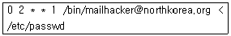
- 화요일 새벽 0시에 /etc/passwd의 내용을 hacker@northkorea.org로 보낸다
- 화요일 새벽 1시에 /etc/passwd의 내용을 hacker@northkorea.org로 보낸다
- 수요일 새벽 1시에 /etc/passwd의 내용을 hacker@northkorea.org로 보낸다
- 월요일 새벽 2시에 /etc/passwd의 내용을 hacker@northkorea.org로 보낸다
(정답률: 84%)
18. 종료시키고자 하는 프로세스가 12345일 때, kill 12345는 프로세스 12345에게 어떤 신호를 보내는가?
- terminate, 즉 SIGTERM 신호를 보낸다
- stop, 즉 SIGSTOP신호를 보낸다
- abort, 즉 SIGABRT 신호를 보낸다
- quit, 즉 SIGQUIT 신호를 보낸다
(정답률: 51%)
19. 다음 중 리눅스에서 정기적으로 명령이나 프로세스를 스케줄할 때 사용하는 프로그램으로 알맞은 것은?
- cron
- tasks
- schedule
- jobs
(정답률: 74%)
20. 프로세스들 간의 상관관계를 계층 구조로 보여주는 명령은 무엇인가?
- pstree
- tree
- ps --tree
- proctree
(정답률: 87%)
21. 다음은 터미널을 통해 프로세스에 전달할 수 있는 시그널들이다. bash를 사용하는 경우 프로세스에 시그널을 전달하기 위해서 bash가 무시하는 시그널이 아닌 것은?
- SIGTTIN
- SIGTTOU
- SIGTSTP
- SIGTERM
(정답률: 55%)
22. 다음은 bash에서 사용 가능한 연산자와 그 설명이 다. 잘못된 것은 무엇인가?
- ! - 비트 반전
- | - OR
- >> - 오른쪽으로 비트시프트
- ? - 조건검사
(정답률: 36%)
23. 다음 리눅스에서 사용할 수 있는 쉘과 그에 대한 설명으로 틀린 것은?
- bash - Korn 쉘과 C 쉘의 유용한 기능을 차용하였다.
- csh - C 언어와 유사한 쉘스크립트를 제공한다.
- ksh - 명령행 편집 기능을 제공한다.
- tcsh - 쉘스크립트로 tcl/tk를 사용한다.
(정답률: 51%)
24. 다음 중 명령어 who에 대한 설명으로 틀린 것은?
- 시스템 사용자들이 접속한 장소 시간 등을 출력하는 도구이다.
- 시스템의 마지막 부팅시간을 알 수 있다.
- 로그인에 관련된 프로세스 ID를 알 수 있다.
- 로그인한 사용자에게 메시지를 보낼 수 있다.
(정답률: 52%)
25. 다음 중 borne 쉘의 환경변수에 대한 설명으로 틀린 것은?
- HOME : 사용자가 시작하는 위치인 홈 디렉터리를 설정한다.
- PATH : 터미널 데이터베이스에 의해 지정되는 대로 터미널 유형의 이름을 설정한다.
- PS1 : 프롬프트의 모습을 정의하는 1차 쉘 프롬프트이다.
- PWD : 사용자의 현재 위치를 나타내어주는 역할을 한다.
(정답률: 67%)
26. 다음 중 BASH 환경에서 alias 를 설정하는 방법으로 알맞은 것은?
- se talias 'rm -i'=rm
- set alias rm='rm -i'
- alias 'rm- i'=rm
- alias rm='rm -i'
(정답률: 69%)
27. 다음 중 쉘의 환경변수 PATH에 새로운 디렉토리를 추가하는 명령으로 알맞은 것은?
- PATH=&PATH:newpath
- &PATH=PATH:newpath
- PATH=$PATH:newpath
- $PATH=PATH:newpath
(정답률: 80%)
28. 명령 행 편집 기능을 제공하는 쉘을 사용할 때 터미널의 설정 잘못으로 키입력이 안되는 현상이 발생할 수 있다 이를 해결하기 위한 도구로 알맞은 것은?
- stty
- chsh
- mincom
- setserial
(정답률: 62%)
29. 다음 중vi 에디터의 모드 전환에 대한 설명으로 틀린 것은?
- i : 입력 모드로 전환 커서 위치 앞에서 삽입
- O : 입력 모드로 전환 현재 줄의 위에 전개
- A: 입력 모드로 전환 커서 위치 뒤에 삽입
- I: 입력 모드로 전환 현재 줄의 앞에 삽입
(정답률: 43%)
30. 다음 중에디터의 종류와 그 에디터의 저장 관련 명령어가 잘못 짝지어진 것은?
- Pico:‘^X’
- vi :‘ :wq’
- emacs: ‘Ctrl-x Ctrl-s’
- nano: ‘Ctrl-y’
(정답률: 46%)
31. 다음 예제 문장을 편집할 때 커서의 위치가 ‘■’일 경우 보기의 명령을 실행했을 때 커서의 위치가 다르게 나타나는 명령은 어느 것인가?
- 4l
- llll
- /c
- $
(정답률: 56%)
32. vi 에디터에서 practice 라는 파일을 생성하고 'vieditor' 라는 텍스트를 입력하여 저장한 후 vi 에디터를 종료하는 작업을 순서대로 알맞게 나타낸 것은?
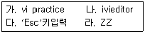
- 가-나-다-라
- 가-나-라-다
- 나-다-라-가
- 나-다-가-라
(정답률: 70%)
33. 다음 emacs 편집기의 커서 이동 명령어에 대한 설명 중 틀린 것은?
- Ctrl + e : 라인의 처음으로 이동
- Alt + a : 문장의 처음으로 이동
- Alt+ v : 한 화면 뒤로 이동
- Alt+ > : 파일 끝으로 이동
(정답률: 45%)
34. 다음에서 설명하는 에디터는 무엇인가?
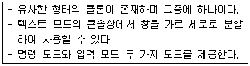
- kwrite
- emacs
- gedit
- vim
(정답률: 52%)
35. 다음 패키지 매니저 중 하나인 yum에 대한 설명으로 틀린 것은?
- RPM 기반의 패키지를 관리하기 위한 도구이다.
- C 혹은 자바를 이용한 플러그인 제작 및 사용이 가능하다.
- 다양한 패키지 저장소를 사용할 수 있도록 설계되어 있다.
- 단일 패키지를 그룹화 하여 그룹에 대한 설치 및 삭제가 가능하다.
(정답률: 48%)
36. 다음 tar 명령의 옵션과 그 설명이 잘못 짝지어진 것은?
- c - 아카이브 파일을 생성한다.
- C - 동작하는 디렉토리를 변경한다.
- P - 상대 경로를 사용하지 않고 절대 경로를 사용하도록 지정한다.
- I - 증분 백업을 수행한다.
(정답률: 45%)
37. 다음 중 데비안 패키지 기반의 패키지를 삭제할 때 설정 파일 및 그 정보까지도 모두 삭제하고자 할 때 사용하는 옵션으로 알맞은 것은?
- -e
- -F
- -r
- -P
(정답률: 28%)
38. 다음 중 rpm 기반의 패키지를 삭제할 때 의존성 에러를 무시하기 위한 옵션 조합으로 알맞은 것은?
- -e --noscripts
- -e --nodeps
- -r --noscripts
- -r --nodeps
(정답률: 61%)
39. 다음 중 zip 파일로 압축되어 있는 텍스트 파일의 압축을 풀지 않고 내용만을 볼 때 사용하는 명령으로 틀린 것은?
- zcat
- zmore
- zless
- zcompress
(정답률: 48%)
40. 다음 중 tar와 유사하게 파일아카이브를 만드는 유틸리티이지만 반드시 아카이브에 포함되는 파일 리스트를 알려주어야만 하는 유틸리티는 무엇인가?
- cpio
- bzip2
- compress
- dd
(정답률: 28%)
41. 다음은 데비안 패키지 관리자에서 특정 파일이 속한 패키지를 찾기 위한 명령이다( )에 들어갈 옵션으로 알맞은 것은
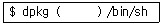
- -L
- -S
- -B
- -D
(정답률: 51%)
42. 다음 중 파일의 확장자와 그 압축프로그램이 잘못 짝지어진 것은?
- Z - compress
- bz2 - bzip2
- tgz - gzip
- rz - alzip
(정답률: 43%)
43. 일반적인 프린터 스풀 디렉토리의 경로로 알맞은 것은?
- ~/spool/lpd/lp
- /usr/spool/lpd/lp
- /etc/spool/lpd/lp
- /var/spool/lpd/lp
(정답률: 47%)
44. 다음 중 무료로 사용할 수 있으며 리눅스 커널에 포함되어 있는 사운드 드라이버는 무엇인가?
- ALSA
- OSS
- OSS/Free
- 업체 제공 사운드 드라이버
(정답률: 46%)
45. 프린터 설치에 관련된 다양한 사항이 기록되어 있는 파일은 다음 중 무엇인가?
- /usr/local/ spool/print
- /var/spool/printercap
- /etc/print cap
- /lib/printer
(정답률: 38%)
46. 다음 중 일반적으로 리눅스 장치들에 대한 파일들이 있는 디렉토리는 무엇인가?
- /etc
- /dev
- /usr/local
- /bin
(정답률: 68%)
47. CD에서 디지털 오디오를 사운드 파일에 저장하고 싶을 때 사용할 수 있는 프로그램으로 알맞은 것은?
- cdparanoia
- sndconfig
- printcap
- jetdirect
(정답률: 69%)
48. 프린터 큐의 상태를 모니터링 하는데 가장 적합한 명령어는 무엇인가?
- lpq
- lp
- lpc
- lpmonitor
(정답률: 71%)
2과목: 리눅스 활용
49. 다음 중 X 윈도우의 구성요소가 아닌 것은 무엇인가?
- X server
- X client
- X protocol
- X modules
(정답률: 64%)
50. 다음 중 X 윈도우가 실행되기 위해서 참조하는 설정 파일이나 실행 프로그램이 아닌 것은?
- xinit
- xclientrc
- xserverrc
- startx
(정답률: 21%)
51. X 윈도우용 디스플레이 설정 프로그램인 system-config-display에서 설정할 수 없는 것은?
- 화면 해상도
- 색상수
- 비디오카드(VGA 드라이버)
- 모니터 전원
(정답률: 68%)
52. 텍스트 모드(runlevel3) 부팅 후 관리자 root로 리눅스 시스템을 사용중 X 윈도우 환경으로 전환하려고 한다 다음 중 시스템 설정 파일 설정 변경 후 재부팅하지 않고 X 윈도우 환경으로 전환할 수 있는 명령이 아닌 것은 무엇인가?
- startx
- init 5
- telinit 5
- siginit 5
(정답률: 25%)
53. 다음은 무엇에 대한 설명인지 보기 중 맞는 것을 고르시오
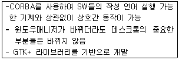
- KDE
- GIMP
- GNOME
- Enlightenment3
(정답률: 66%)
54. NTA(Network Transparent Access)라는 기술을 지원하여 아무 폴더에서나 FTP상의 파일을 액세스하거나 인터넷 검색이 가능하다FTP 서버에 있는 폴더도 자신의 하드 디스크에 있는 것처럼 편리하게 사용할 수 있다 다음 중위와 같은 기능을 지원하는 것은 무엇인가?
- GNOME
- f vwm
- KDE
- Afterstep
(정답률: 27%)
55. 다음 중 리눅스 시스템의 X 윈도우에서 동작하는 이미지 편집도구는 무엇인가?
- Photoshop
- Paintshop
- CorelDRAW
- GIMP
(정답률: 75%)
56. 다음 중 리눅스 시스템의 X 윈도우에서 동작하는 멀티미디어 프로그램이 아닌 것은?
- AfterStep
- MTV
- XMMS
- BMP
(정답률: 41%)
57. 다음에서 설명하는 이것은 무엇인지 아래 보기에서 고르시오
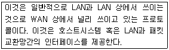
- Ethernet
- CSMA
- FDDI
- X.25
(정답률: 37%)
58. 프로토콜의 기본 구성요소와 설명이 바르게 짝지어진 것이 아닌 것은?
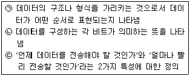
- 순서 Sequence) - (ㄱ)
- 의미 Semantics )- (ㄴ)
- 타이밍Timing) - (ㄷ)
- 구문 Syntax) - (ㄱ)
(정답률: 54%)
59. 다음에서 설명하는 네트워크 통신장비는 어느 것인가?
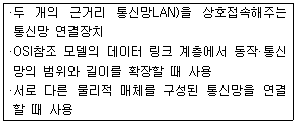
- 라우터(Router)
- 리피터(Repeater)
- 브리지(Bridge)
- 게이트웨이Gateway)
(정답률: 52%)
60. 다음 설명에 맞는 OSI 계층은 무엇인가?
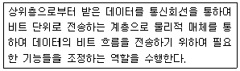
- 응용계층(Application Layer)
- 표현 계층(Presentation Layer)
- 네트워크계층(Network Layer)
- 물리 계층(Physical Layer)
(정답률: 51%)
61. 다음 IP헤더의 ( )안에 들어가는 데이터는 무엇인가?
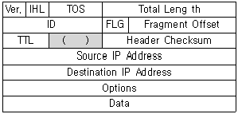
- Port
- Sequence
- Protocol
- Pointer
(정답률: 41%)
62. 다음에서 설명하는 특징을 갖고 있는 네트워크 통신장비는 어느 것인가?
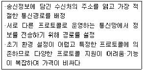
- 라우터(Router)
- 리피터(Repeater)
- 브리지(Bridge)
- 게이트웨이(Gateway)
(정답률: 61%)
63. 다음 중 InterNic에 등록해야 하는 일반 최상위 도메인(gTLD)은 무엇인가?
- .com
- .net
- .org
- .edu
(정답률: 22%)
64. 다음 중 TCP/IP의 특징으로 해당하지 않는 것은 무엇인가?
- 개방형 프로토콜 표준으로 특정 H/W나 OS에 독립적으로 자유롭게 사용 가능
- 거대한 네트워크에서도 유일하게 찾아낼 수 있는 공통적인 주소체계
- 일관성 있고 널리 사용 가능한 사용자 서비스를 위해서 표준화된 하이 레벨 프로토콜
- 특정 물리적 전송 매체에서만 실행 가능
(정답률: 71%)
65. 다음에서 설명하는 이것은 무엇에 대한 설명인가?
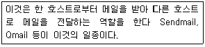
- MUA(Mail User Agent)
- MTA(Mail Transfer Agent)
- MDA(Mail Delivery Agent)
- MTU(Mail Transfer Unit)
(정답률: 37%)
66. SSH(Secure SHell)는 원격 컴퓨터에 안전하게 액세스하기 위한 유닉스 기반의 명령 인터페이스 및 프로토콜이다 보안에 취약한 telnet을 대체할 수 있는 SSH는 기존의 원격제어서비스 및 응용프로그램을 대체할 수 있는데 다음 중 SSH와 관련 없는 응용프로그램은 무엇인가?
- slogin
- scp
- sftp
- stelnet
(정답률: 40%)
67. 다음 중 IRC클라이언트 프로그램이 아닌 것은?
- BitchX
- XChat
- ircII
- PICE
(정답률: 50%)
68. 다음 중 나머지 셋과 관련이 가장 적은 것은?
- 파이어 폭스(Firefox)
- 오페라(Opera)
- 컹커러(Konqueror)
- 썬더버드(Thunderbird)
(정답률: 59%)
69. 다음 중 전송 규약(Protocol)과 해당하는 서버 프로그램간의 짝이 틀린 것은?
- FTP - vsftpd
- SMTP- sendmail
- HTTP- apache
- DNS - search
(정답률: 64%)
70. TCP/IP 통신을 실행하기 위해 필요한 설정 정보를 자동적으로 할당관리하기 위한 통신 규약으로 주어진 IP 주소가 일정한 시간 동안만 그 컴퓨터에 유효하도록 하는 "임대해 주는 프로토콜은?
- DNS
- NFS
- DHCP
- HTTP
(정답률: 70%)
71. 다음 중 성격이 다른 하나는 무엇인가?
- ncftpd
- gftp
- proftpd
- vsftpd
(정답률: 49%)
72. 다음 중 SSH에서 지원하는 클라이언트 프로그램이 아닌 것은?
- slogin
- sftp
- scp
- sput
(정답률: 43%)
73. 다음 중 리눅스 시스템에서 이더넷의 현재 설정된 네트워크 정보를 확인할 수 있으며 네트워크 정보를 설정 하거나 이더넷을 활성화/비활성화 할 수 있는 명령어는 무엇인가?
- netstat
- route
- ipconfig
- ifconfig
(정답률: 58%)
74. 다음은 무엇을 설명한 것인지 보기에서 고르시오?
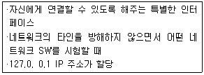
- loopback
- ethernet
- route
- gateway
(정답률: 75%)
75. 다음과 같이 첫번째 이더넷에 IP 주소를 설정하려고 한다. ( )안에 들어가야 하는 것은 무엇인가?
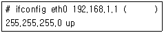
- netmask
- gateway
- subnet
- address
(정답률: 61%)
76. 시스템 설정 파일 /etc/sys config/network와 다음의 명령어 실행은 공통적으로 무엇을 변경하고자 할 때 사용하는 것인가?
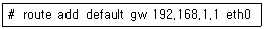
- IP 주소
- Gateway 주소
- 로컬DNS 주소
- 네트워크주소
(정답률: 69%)
77. 임베디드 분야 중 최근 모바일 시장에서는 스마트폰이 대세가 되어 시장을 주도하려고 있다. 스마트폰에 탑재되는 리눅스 기반의 운영체제가 아닌 것은?
- bada(Samsung)
- LiMo(LiMo Foundation)
- android(Google)
- iPhone OS(Apple)
(정답률: 48%)
78. 다음 중 리눅스로 구현되는 클러스터 시스템이 아닌 것은?
- LVS(Linux Virtual Server)
- HA(High Availability)
- HPC(High Performance Computing)
- KVM(Kernel Virtual Machine)
(정답률: 44%)
79. 다음에서 설명하는 병렬처리시스템의 성능을 나타내는 용어로 알맞은 것은?
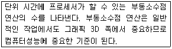
- Flops
- MHz
- FPS
- PPM
(정답률: 32%)
80. 블루투스에 대한 설명중( )안에 들어갈 내용으로 바르게 짝지어진 것은?
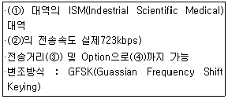
- 2.4GHz - 1Mbps - 10m - 100m
- 1.2GHz - 5Mbps - 5m - 50m
- 800MHz - 1Mbps - 10m - 100m
- 2.4GHz - 5Mbps - 10m - 100m
(정답률: 53%)
1000은 sticky bit으로, 디렉토리에 설정되면 해당 디렉토리 내의 파일은 소유자나 그룹 멤버만 삭제할 수 있습니다.
2000은 SetGID 비트로, 파일에 설정되면 해당 파일을 실행하는 프로세스는 파일의 그룹 ID를 가지게 됩니다.
4000은 SetUID 비트로, 파일에 설정되면 해당 파일을 실행하는 프로세스는 파일의 소유자 ID를 가지게 됩니다.